Stylized nature / Modular environment / Unity URP
Forest & Cliffs
Woodland paths, layered cliffs and quiet watersides. Build a fantasy landscape with broadleaf trees, conifers, mossy rocks and a matching collection of forest details.
Awaiting Unity approval · $15 USD
Submitted to Unity Asset Store on 30 October 2026. Not available to purchase yet. No release date is confirmed; this page will link to the store once the package is published.
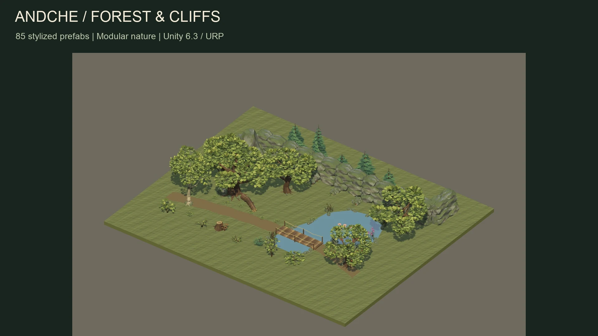
From a forest path to a rocky crossing.
Shape the landscape.
Connect 4-metre cliff sections using straight pieces, corners, ends and connection markers. Add a 6-metre timber bridge, stepping stones, a narrow passage or a mountain entrance.
Place individual props for your own layout, or start with assembled groves and rock formations. Both use the same cohesive stylized materials.
85 prefabs, ready to arrange.
- 12 trees and 12 shrubs / forest details
- 15 rocks and boundaries, plus 7 cliff modules
- 10 path, passage and shore details
- 18 aquatic decorations and 9 larger nature compositions
- 2 mountain / entrance models
85 counts size and colour variants and assembled compositions, not 85 unique base models.
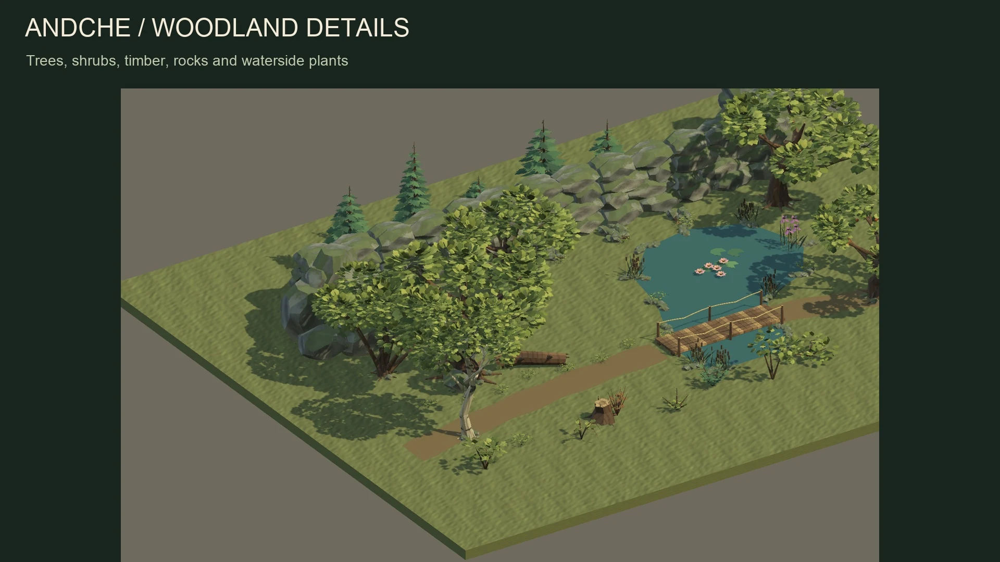
Explore the included models.
Actual Unity renders of the supplied assets. Select any image for a larger view.
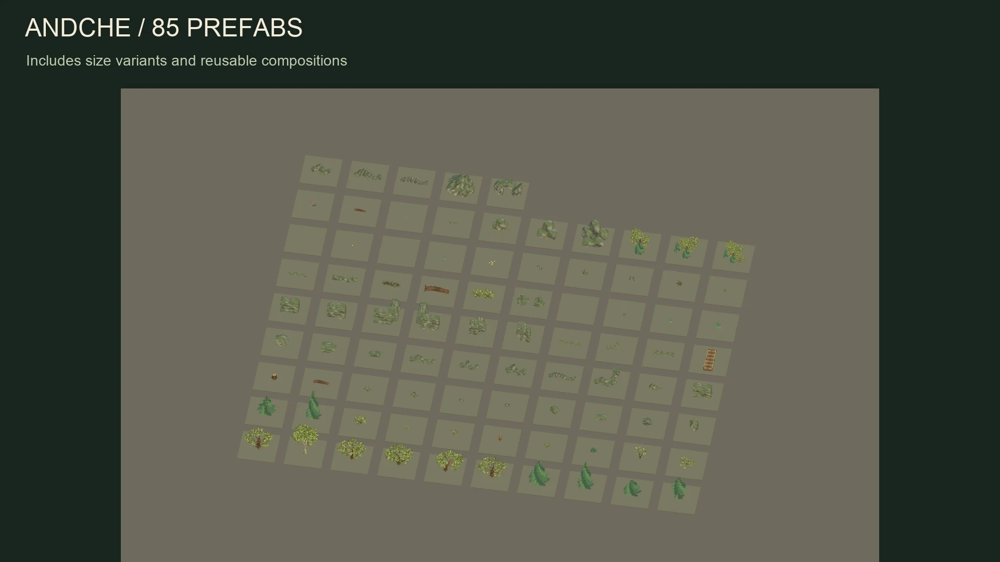

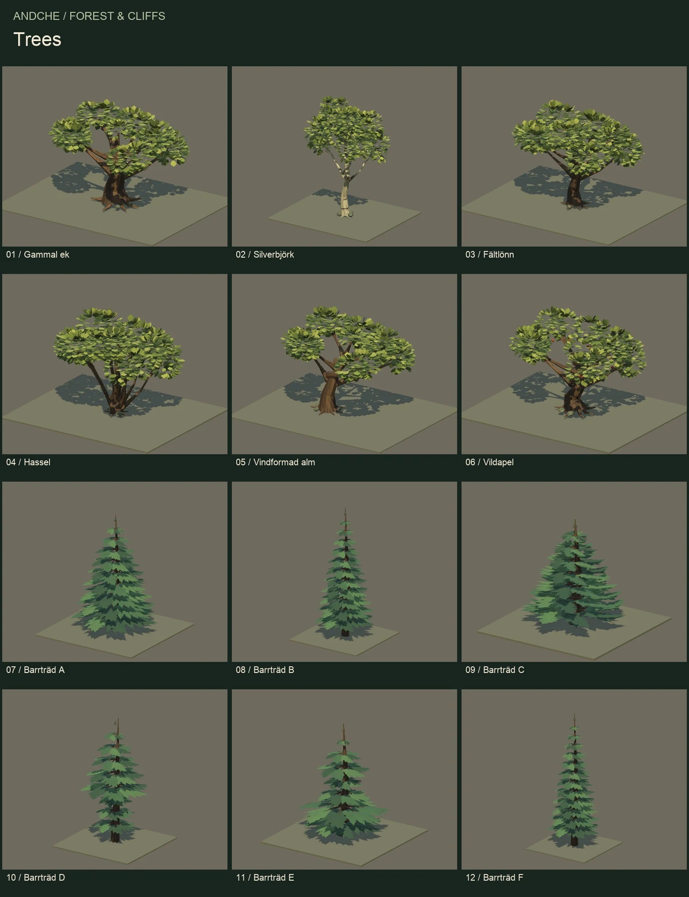

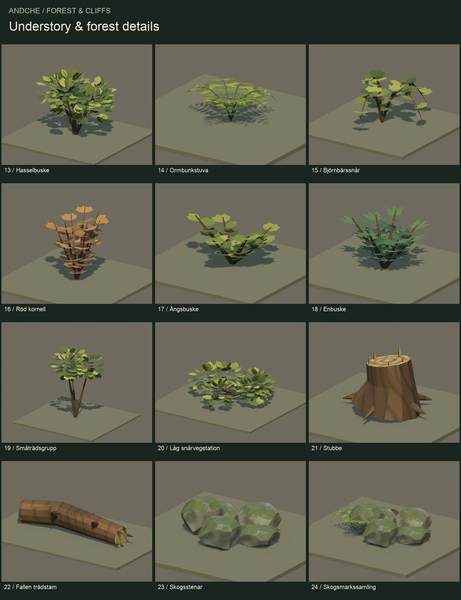

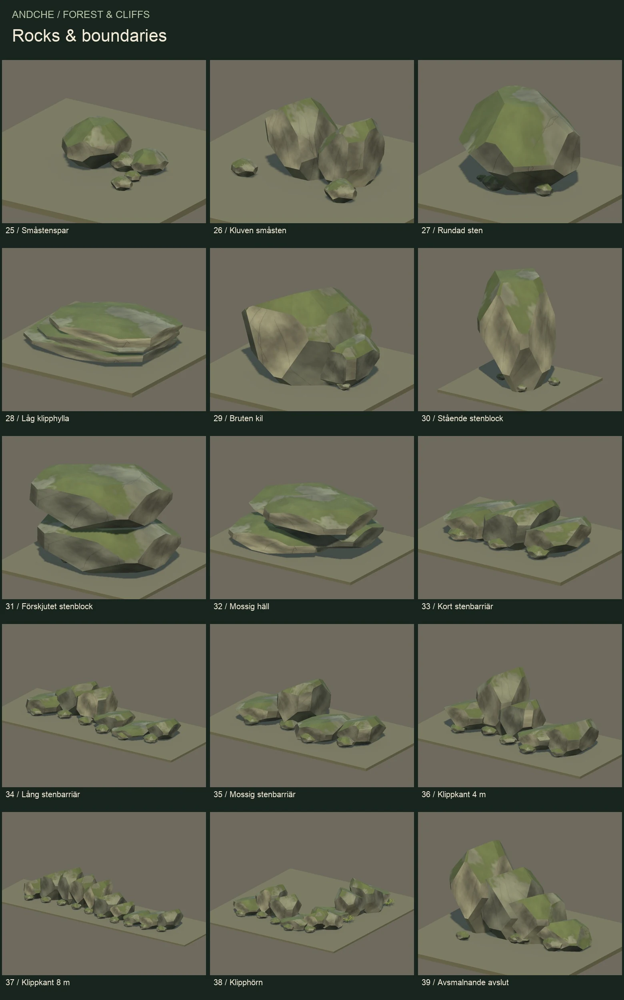

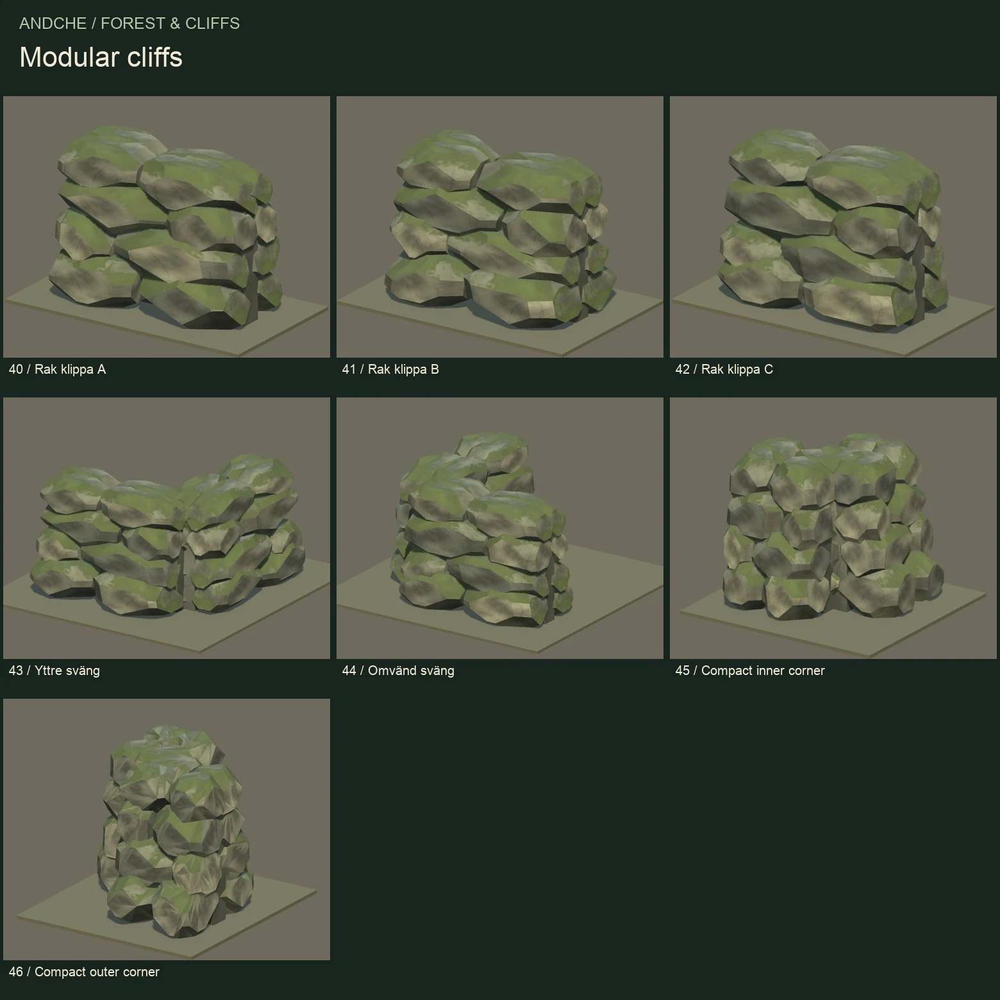

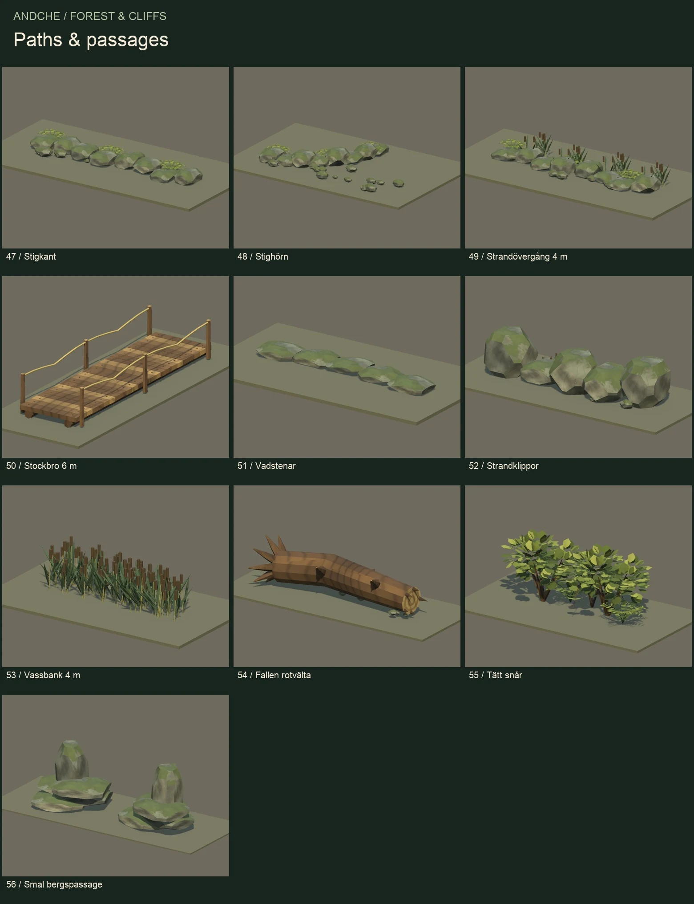

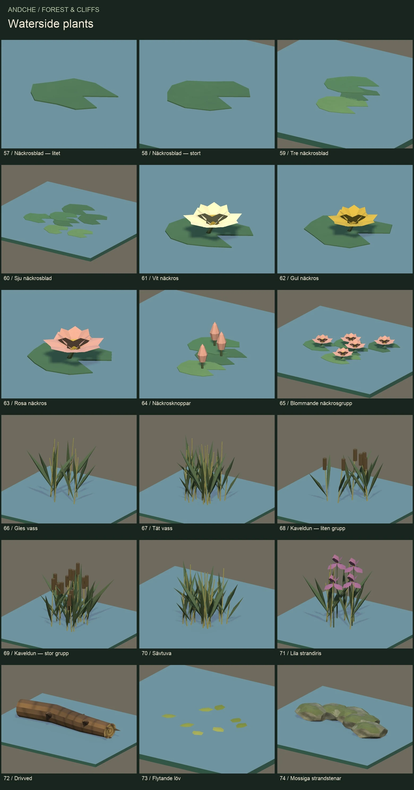

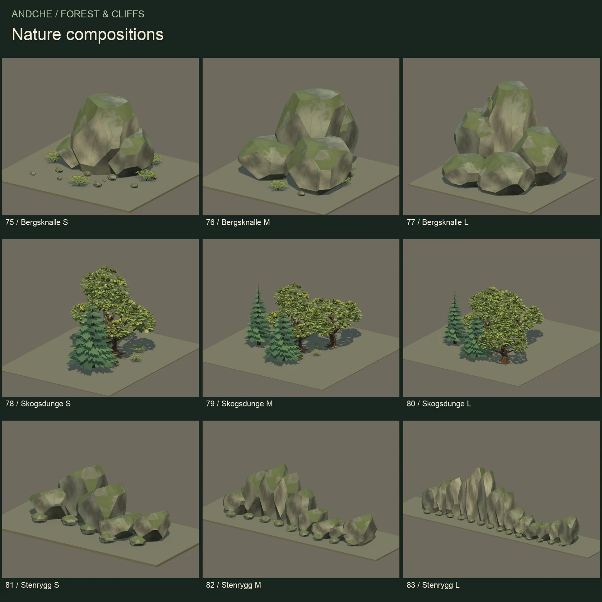

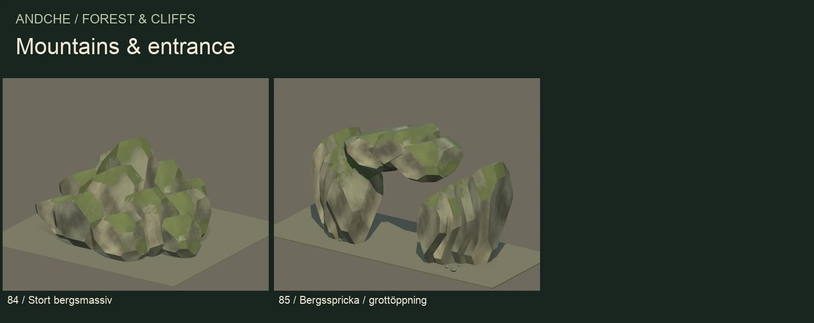
What comes with the kit?
Editable assets and example scenes.
- 85 Unity prefabs with configured detail levels and colliders
- 251 editable OBJ files, including LOD meshes
- Forest Pond Demo and Prefab Overview scenes
- 5 shared materials, a 2048 × 2048 material atlas and a 512 × 512 demo ground texture
- English documentation and an inventory with dimensions and triangle counts
Unity 6.3 · URP 17.3
Prepared and tested with Unity 6000.3.23f1 and Universal Render Pipeline 17.3.0. Built-in and HDRP materials are not supplied.
Most individual prefabs have two or three distinct detail levels. Assembled groves use LODs on their individual child prefabs. Geometry ranges from a 48-triangle lily detail to a 138,948-triangle dense grove at LOD0.
Static environment art
Arrange the supplied models in your own scenes and connect them to your own systems.
Scope and compatibility
No wind animation, terrain editor, line tool, water simulation, navigation or gameplay system is included. Atlas UVs intentionally overlap; baked lightmap UVs are not supplied. Solid environment props use static colliders. No platform-specific performance guarantee.
Build out your world.
Explore the Dwarven Mine Kit for underground spaces, the Goblin Camp & Den Kit for forest encounters, or Low Poly Dragon for a larger creature.
Explore all assets Ask about compatibility ↗Updated 30 October 2026. Planned base price: $15 USD before taxes. Regional pricing will be set by Unity Asset Store. Awaiting approval; not available to purchase yet.